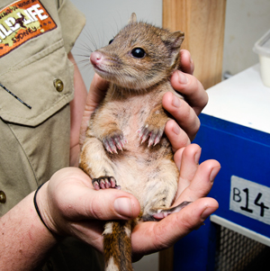

Peamised ohustajad
<<<<<<< HEAD Ohud
Kvoll on liigina väljasuremisohus. Austraalias ohustavad kvolli võõrliigid - rebased, kassid ja konnad.
Roo kärnkonn on suurim kärnkonnaliik, samuti on ta väga mürgine loomadele, kes teda söövad.
Kassidel, rebastel ja kvollidel on sarnased toitumiseelistused. Toidulaua nimel võistlemine on kvollide
populatsioonile märgatava löögi andnud. Lisaks on kvollide arvukusele ohuks kujunenud linnastumine,
mis sunnib loomi tihti elupaika vahetama.
Kaitsemeetmed
Loomakaitsjate valvsa hoole all aretatakse kvolle ja lastakse täiskasvanuikka jõudes vabadusse. Kaitsealadel
kasvavad ja paljunevad kvollid edukalt. Kvollide liigi elule aitamiseks on hakatud vähendama rebaste arvukust.
Lisaks on kaalumisel kvollide pidamine koduloomadena, see aitaks liigil säilida aga loomad kohaneksid liiga
edukalt inimestega.

=======
Looduses seisavad kvollid silmitsi paljude ohtudega. Võõrloomad nagu rebased ja kassid
on avaldanud destabiliseerivat mõju kvollide populatsioonile. Nad mitte ainult ei jahi
kvolle, vaid kokureerivad ka toitude ja ressursside pärast. Veel potsentsiaalset ohtu
avaldavad püütonid, dingod, kotkad ja öökullid.
Täiskasvanud kvollid võivad enda kaitseks kratsida ja hammustada. Kui muu ei aita,
nad kas põgenevad ja poevad peitu. Noored pojad on röövloomade suhtes kõigehaavatamad,
kuna nad sõltuvad peaaegu täielikult oma emadest.
Mürgise rookärnkonna toomine Austraaliasse 1935. aastal avaldas laastavat mõju ka kohalike
kvollide populatsioonile. Algselt peeti konna tõhusaks kahjurite tõrjeks, aga
avaldas soovimatut kaasmõju ning mürgitas ja tappis paljud röövloomad. Kärnkonn elab
endiselt suures osas Kirde-Austraalias, ohustades allesjäänud kvollide populatsioone.
 >>>>>>> 1615f7e3056fa759a49ab888647a82c5513ebb57
>>>>>>> 1615f7e3056fa759a49ab888647a82c5513ebb57